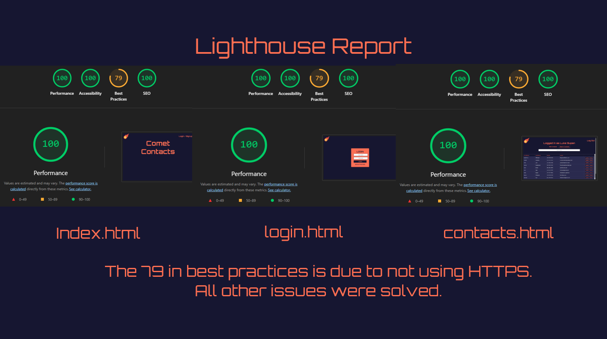

My Experience With Comet Contacts
Comet Contacts was my first team-based web dev experience. I did it over the Summer for "Processes for Object Oriented Software Development", and it taught me a lot about working on a software development team as well as some basic tools.
This was a LAMP stack site, so the structure is fairly simple and this made it so much easier to learn parts of web dev I didn't know like databases and APIs while using things I was familiar with like HTML and CSS.
I worked as the lead front-end dev for the project and was in charge of everything related to design. I came up with the name, I made the color pallette, I decided the entire look of the site. The lighthouse report slide above shows a bit of the work I did.
We made the site in around two weeks and presented it live in class where it was recieved well for the inclusion of pagination and overall design.
Our second project ScreenBuddy was overall more impressive, but I enjoyed the simplicity of this project and I learned a lot about web development. When I learn something I like to get very familiar with the basics before moving on to higher level skills, this project allowed me to do that.